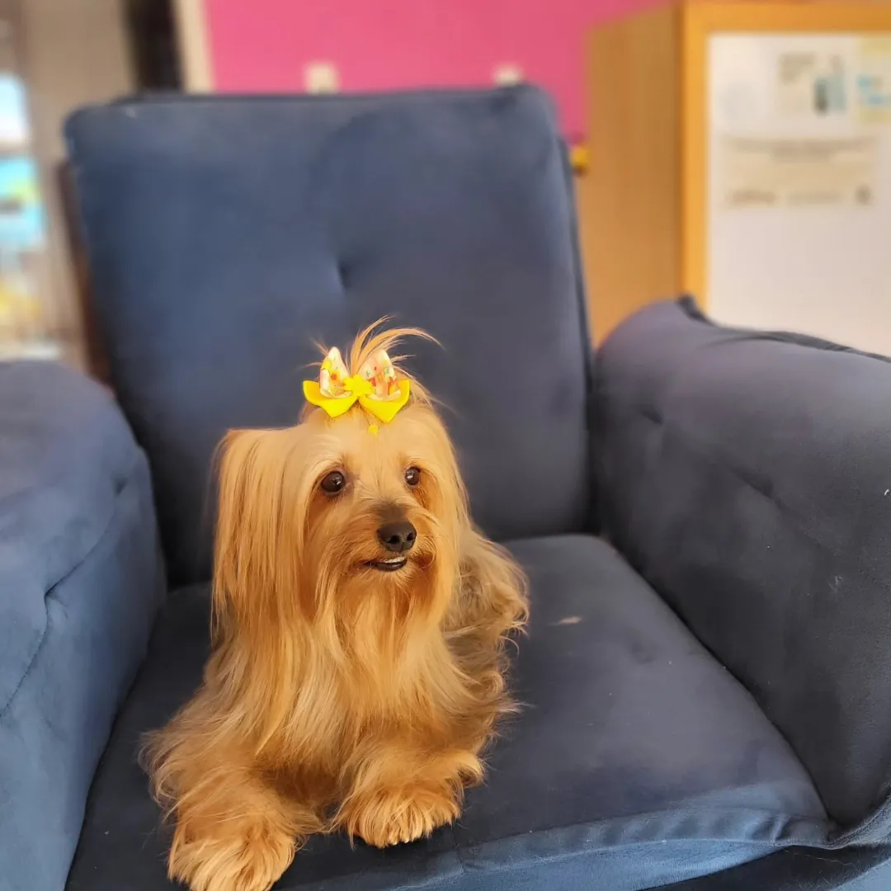
Banho
Secagem caprichada e finalização com lacinho ou bandana.
Agendar banhoPet shop e creche canina em Jundiaí
Banho, tosa, creche e hospedagem no Vianelo, em Jundiaí.
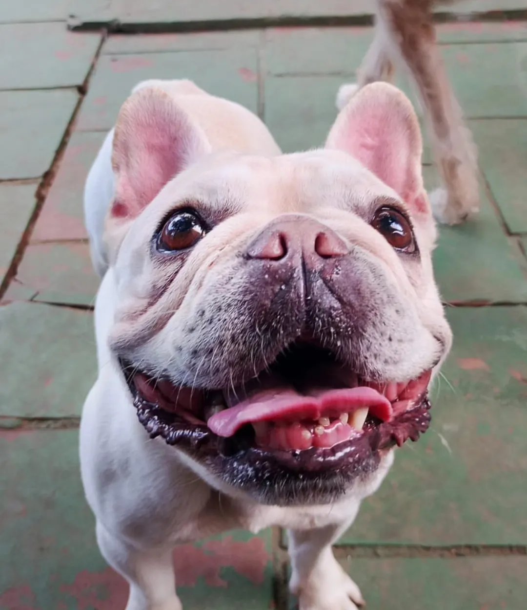
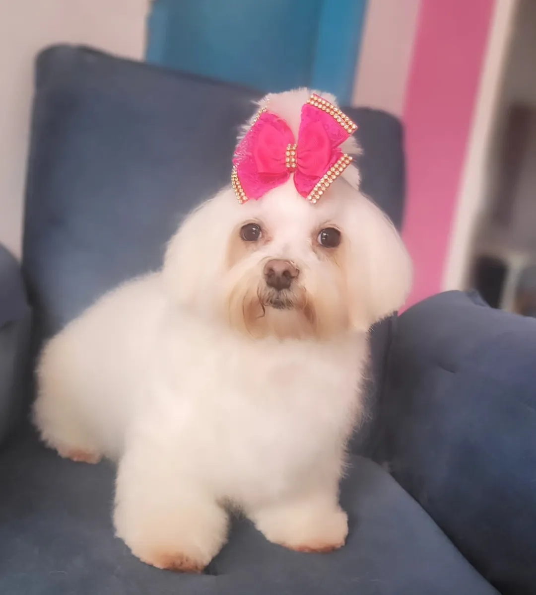
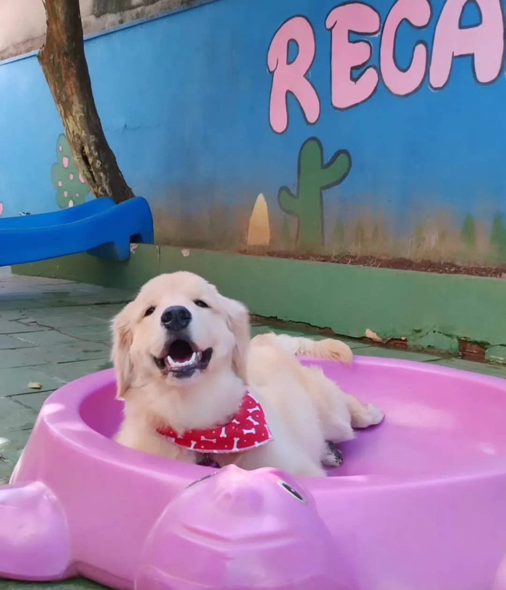
Cheirosos e felizes 💗Nossos serviços

Secagem caprichada e finalização com lacinho ou bandana.
Agendar banho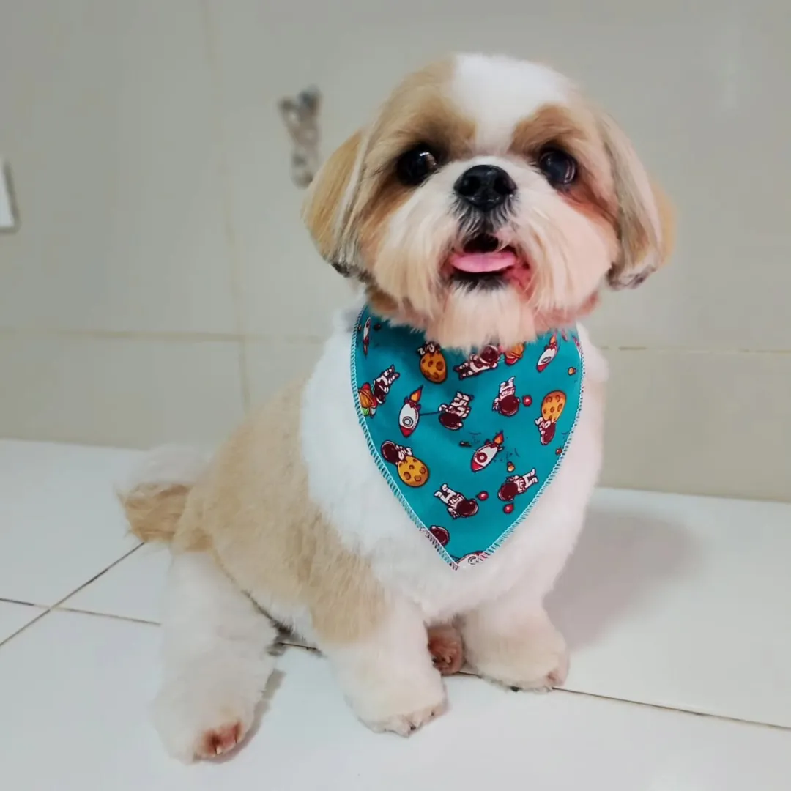
Com paciência e no jeitinho de cada pet.
Agendar tosa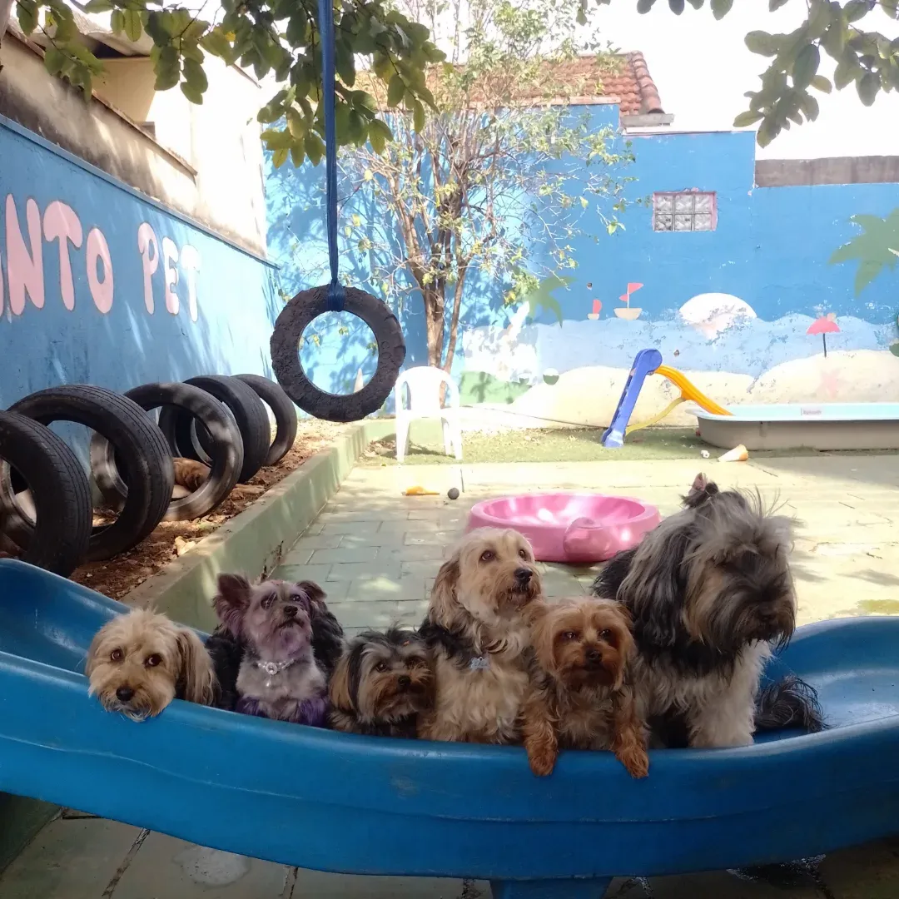
Brincadeiras, amigos e supervisão o dia todo.
Agendar creche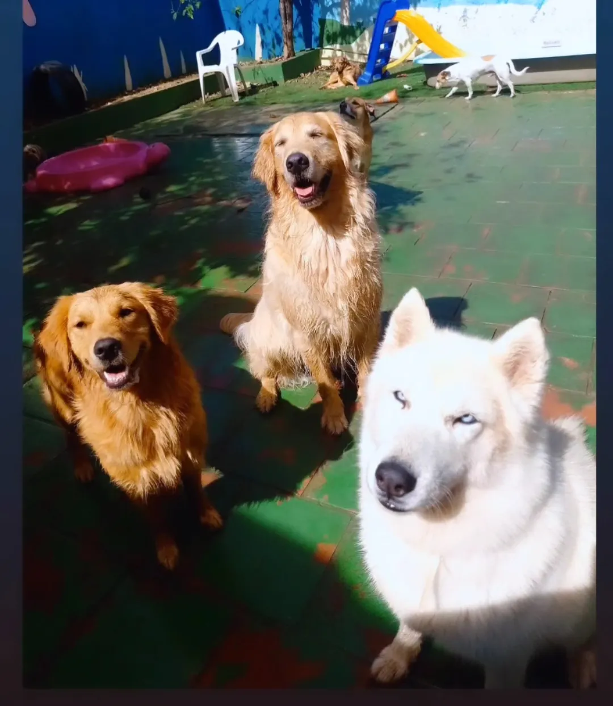
Rotina, companhia e carinho enquanto você viaja.
Agendar hospedagemCreche Recanto Pet
Enquanto você trabalha, seu pet socializa, gasta energia e volta pra casa tranquilo.
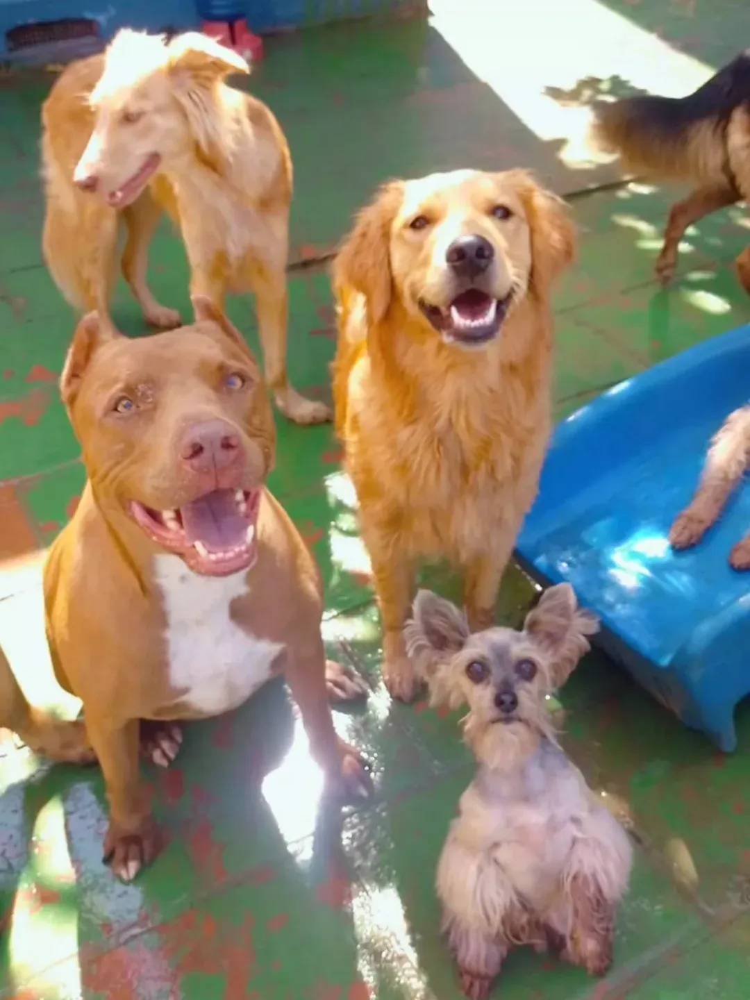
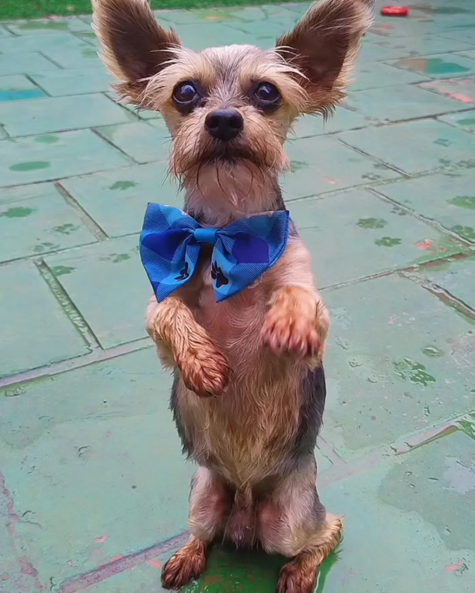
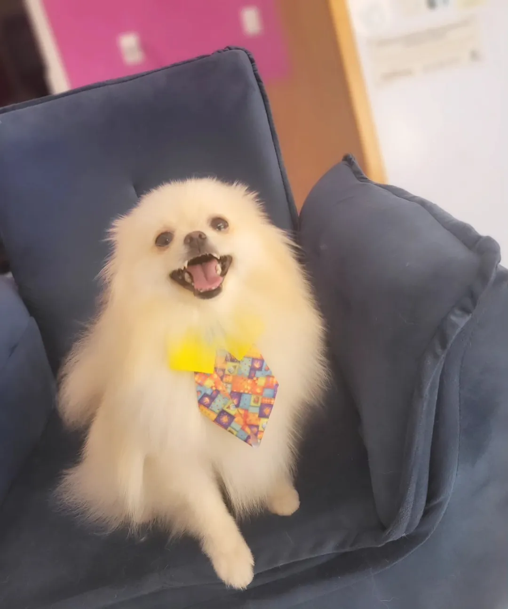
Por que o Recanto Pet?
Datas especiais
Cenários temáticos e fotos lindas para o seu pet.
Festinha e fotos especiais.
Ensaio em cenário natalino.
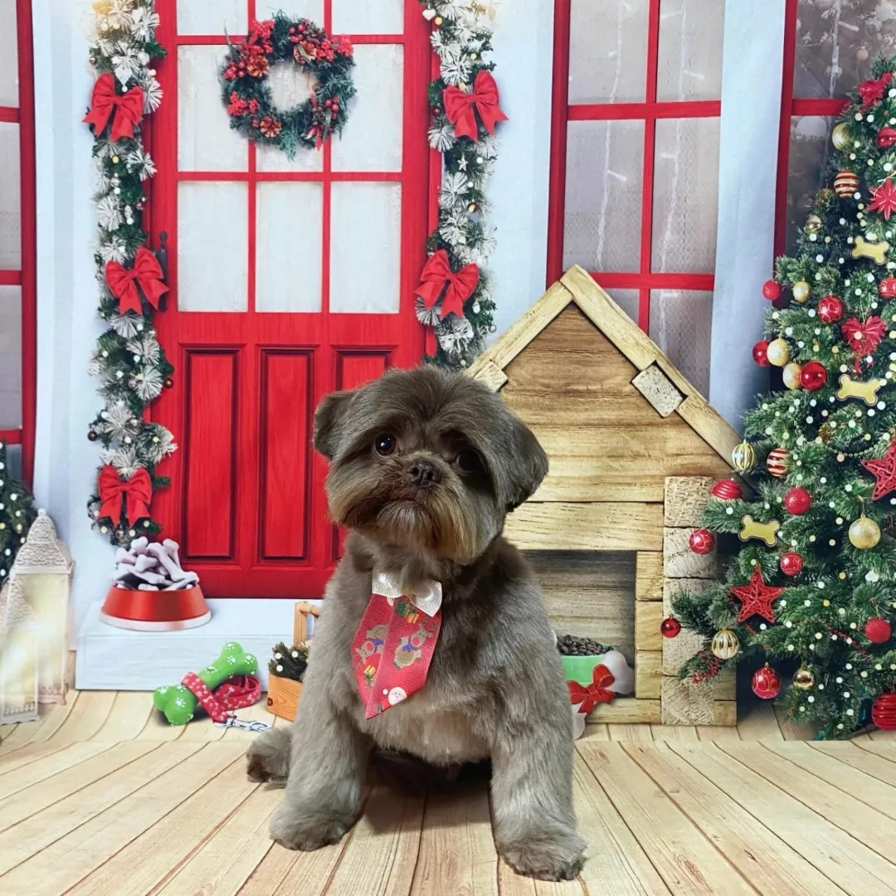
Depoimentos
Graças ao Recanto Pet e sua creche ele se tornou um cachorro feliz, animado, brincalhão e confiante.
O resultado ficou melhor do que eu esperava. O atendimento é sensacional, desde o contato telefônico.
Se acabam de gastar energia na creche, a equipe é super atenciosa, tem muito amor e carinho pelos pets, e o banho deles maravilhoso nota 10.
Contato e localização